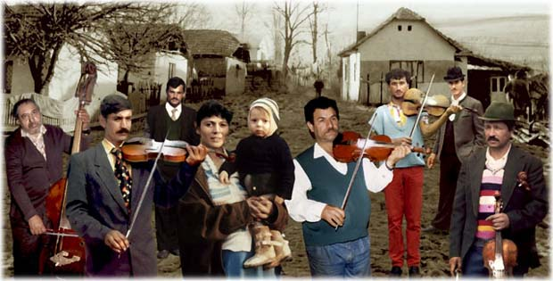

A műfaj eredete
Eredetileg a hangszeres verbunkos zenét nevezték így. Mai értelmezése szerint a magyar nóta a 19. század második felének magyar népdalt utánzó dalműfaja. A magyar nóta csaknem két százados pályafutása a 19. század elején kezdődött. Zenei ihletője elsősorban a verbunkos volt. Ezenkívül előzményeit a hangszeres verbunkos-zenében, a 18. századi diákmelódiáriumok dallamaiban és a magyar népdalban keressük. Az énekhangra írt szerzemények is őrzői a hangszeres fordulatoknak, például Cserebogár, sárga cserebogár; Ég a kunyhó, ropog a nád, stb.
A reformkortól a századfordulóig egyik legfőbb terjesztője a népszínmű volt, amelyeket olyan neves előadóművészek népszerűsítettek, mint például Déryné Széppataki Róza, Blaha Lujza, Tamássy József és mások, továbbá a cigányzenészek. Időközben a magyar nóta tartalmilag és formailag is sokat változott. A 19. század elején leginkább a német befolyás ellensúlyozására törekedtek. Szolgálták vele a szabadságharcot és részben tiltakoztak vele a Bach-korszak elnyomása ellen. A kiegyezés után a hanyatló dzsentri "búsmagyar" szemlélet kerekedett felül.
